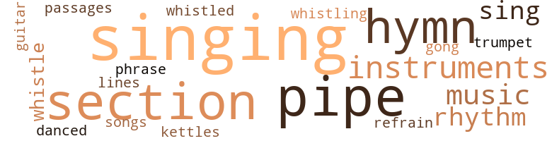
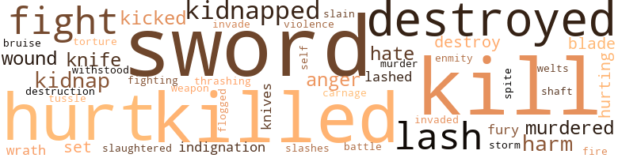
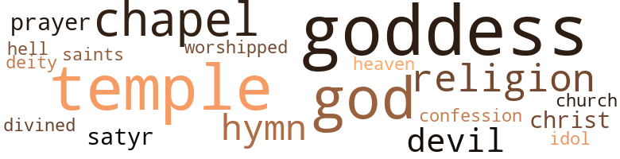

Jewels of Aptor (The), by Delany, Samuel R. (1962)
65 music-related terms matched in this text.
Most frequent terms in this topic: singing (11); section (7); pipes (6); instruments (6); hymn (5)
cornet.n.01
Definition: a brass musical instrument with a brilliant tone; has a narrow tube and a flared bell and is played by means of valves
| word | sentence |
|---|---|
| trumpet | Crouching in the trumpet , she looked down at the Snake . |
dance.v.03
Definition: skip, leap, or move up and down or sideways
| word | sentence |
|---|---|
| danced | As Urson danced back , one of the figures behind the injured one stepped squarely on the blob which attached itself to its ankle , and was absorbed . |
gong.n.01
Definition: a percussion instrument consisting of a metal plate that is struck with a softheaded drumstick
| word | sentence |
|---|---|
| gong | Somewhere a gong sounded . |
guitar.n.01
Definition: a stringed instrument usually having six strings; played by strumming or plucking
| word | sentence |
|---|---|
| guitar | His good arm , which held the edge of the plank as he crouched , was shaking like a plucked string on a loose guitar . |
hymn.n.01
Definition: a song of praise (to God or to a saint or to a nation)
| word | sentence |
|---|---|
| Hymn | " Hymn To The Goddess Argo " Geo read aloud . |
| hymn | She heard singing , the beginning of a processional hymn . |
| hymn | But the hymn , sonorous and gigantic , rose like flood water , and she suddenly thought that if she fell , she would drown in the sound of it . |
| hymn | The hymn began to repeat itself , individual words lost in the sonority of the hall . |
| hymn | They started forward again , and the last note of the hymn echoed to silence , filling the hall with the roaring hush of hundreds breathing . |
| hymn | The hymn began again behind them , as if their departure were a signal . |
kettle.n.04
Definition: a large hemispherical brass or copper percussion instrument with a drumhead that can be tuned by adjusting the tension on it
| word | sentence |
|---|---|
| kettles | But he was going on : " And do you remember the goldsmith , the lover , how he recorded in his autobiography that at age four , he and his father saw the Fabulous Salamander on their hearth by the fire ; and his father smacked the boy across the room into a rack of kettles , saying something to the effect that little Cellini was too young to remember the incident unless it was accompanied by pain . " |
music.n.01
Definition: an artistic form of auditory communication incorporating instrumental or vocal tones in a structured and continuous manner
| word | sentence |
|---|---|
| music | Its sapphire belly heaved in the early light ; it opened its red mouth , its throat fluttered , and there was another burst of music . |
| Music | Music poured after them . |
| music | There was only the music . |
| music | Over the music they heard a brittle chirping from the trees . |
| music | Because he likes music ; and because silence frightens him . |
musical_instrument.n.01
Definition: any of various devices or contrivances that can be used to produce musical tones or sounds
| word | sentence |
|---|---|
| instruments | Only three of these instruments were constructed . |
| instruments | The instruments were lost , but not before the bird machines had even destroyed the City of New Hope itself . |
| instruments | And mechanically , to this day , our instruments tell us , the lights along its elevated highways flare at sunset , as if dead hands were there to operate them . |
| instruments | " What about the . . . the three instruments ? " |
| instruments | In this room sat a white porcelain table and floor-to-ceiling cases of glittering instruments . |
| instruments | A huge desk , cornered with wooden eagles , was spread with papers , instruments of cartography , sextants , rules , compasses ; great , shabby books were piled on one corner . |
passage.n.06
Definition: a short section of a musical composition
| word | sentence |
|---|---|
| passages | Snake took off down one of the passages ; they followed , Urson looking particularly bewildered . |
phrase.n.02
Definition: a short musical passage
| word | sentence |
|---|---|
| phrase | " Strange , this phrase has never left our language . |
pipe.n.04
Definition: a tubular wind instrument
| word | sentence |
|---|---|
| pipes | Just beyond the edge of the sunlight , in the artificial illumination from the jewel , huge , rumpled , black sacks hung close together along naked pipes of the exposed plumbing along the ceiling . |
| pipes | In the centre of the room hung a metal sign : NEW EDISON ELECTRIC COMPANY Beneath it , in smaller letters : " Light Down the Ages " Great cylinders , four or five times the height of a man , humped over the floor under pipes , wires , and catwalks . |
| pipes | Twin dynamos whirred and the walls were laced with pipes . |
| pipe | With thirty feet of one-and-a-half inch brass pipe , she mused sleepily , I could carry heat from the main hot water line under the floor , which I would estimate to be about the proper surface area to keep these stones warm . |
| pipe | Let me see ; thirty feet of one-and-a-half-inch pipe has a surface area of 22/7 times 3/2 times 30 which is 990 divided by 7 which is . . . Then she caught herself . |
| pipes | They climbed the ladder at the side of the passage , and emerged amid the tangle of pipes representing hair . |
| pipes | They grabbed wrists , and Snake 's other three hands , as well as the joints of his knees , locked around the base of five pipes that sprouted around them . |
| pipes | Then she was lying among the metal pipes , and he was prying her fingers from his wrist . |
refrain.n.01
Definition: the part of a song where a soloist is joined by a group of singers
| word | sentence |
|---|---|
| refrain | After closing her eyes , she perfunctorily attempted to reconstruct what she could of an ancient poem , about a young lady who had ended in a similar position , with the refrain , " Curfew must not ring tonight . . . . " Then the door swung closed , and someone grabbed her around the waist . |
rhythm.n.04
Definition: the arrangement of spoken words alternating stressed and unstressed elements
| word | sentence |
|---|---|
| rhythm | The shock in the rhythm started her heart beating . |
| rhythm | And the waves , measured and magnificent , followed one another on to the sand , like the varying , never duplicated rhythm of a good poem : yet peaceful , ordered , and calm . |
| rhythm | Now , take all we 've been through , the confusion , the pain , the disorder ; reconcile that with the great order obvious in something like the sea , with its rhythm , its tides and waves , its overpowering calm , or the ordering of cells in a leaf , or a constellation of stars . |
| rhythm | And they also emerged from that jungle of horror on to that great arcing rhythm of waves and sand . |
section.n.01
Definition: a self-contained part of a larger composition (written or musical)
| word | sentence |
|---|---|
| section | They made fire with a rock against a section of rusted girder . |
| section | They could not see the altar , but there were doors between the columns , and as their eyes grew sensitive , they saw that one section of wall had not withstood time 's sledge . |
| section | " Here 's a section on the burial of the dead . |
| section | The section of road on which they perched now wavered up and down a good three feet . |
| section | They ran up the road , plunging suddenly into a darkened section . |
| section | They were in a section of the passage now that corresponded roughly to the statue 's radial artery . |
| section | There was one whole section for poisonous plants : Death Angel , Wolfsbane , Deadly Nightshade , Monk 's Hood , Hebenon , the whole works . " |
sing.v.02
Definition: produce tones with the voice
| word | sentence |
|---|---|
| sing | That is what you will sing of if your songs are to become great . " |
| sing | Why does a poet sing ? |
| sing | " It 's like the blue lizards that sing outside your window , " he explained . |
| sing | " Only it is n't blue , and it does n't sing . " |
singing.n.01
Definition: the act of singing vocal music
| word | sentence |
|---|---|
| singing | Freeze the drop in the hand , break the earth with singing . |
| singing | " Freeze the drop in the hand and break the earth with singing . |
| singing | He recited : " Burn the grain speck in the hand and batter the stars with singing . |
| singing | Burn the grain speck in the hand and batter the stars with singing . |
| singing | She heard singing , the beginning of a processional hymn . |
| singing | " Freeze the drop in the hand , and break the earth with singing . |
| singing | " The singing lizards , " said Hama . |
| singing | Suddenly you heard a singing in the trees . |
| singing | " Who needs an old lizard singing to them on a morning like this ? " |
| singing | You think of a bird singing and you think thoughts that men have been thinking for thousands upon thousands of years . |
| singing | As Urson tried to pull the blade free , Jordde sent his whip singing again . |
song.n.01
Definition: a short musical composition with words
| word | sentence |
|---|---|
| songs | That is what you will sing of if your songs are to become great . " |
tune.n.01
Definition: a succession of notes forming a distinctive sequence
| word | sentence |
|---|---|
| lines | But it is the last two lines that puzzle me . " |
whistle.v.01
Definition: make whistling sounds
| word | sentence |
|---|---|
| whistling | One got past Iimmi 's whistling staff and Geo grabbed a furry arm . |
| whistle | Once he saw something , let out a low whistle , but continued to lower himself to the straightened girder . |
| whistle | " Well , I was wondering . . . " He stopped , and let out a low whistle . |
| whistled | Some of them whistled . |
156 violence-related terms matched in this text.
Most frequent terms in this topic: kill (16); sword (13); killed (12); hurt (11); destroyed (11)
anger.n.01
Definition: a strong emotion; a feeling that is oriented toward some real or supposed grievance
| word | sentence |
|---|---|
| anger | The sudden swell of anger and fear defined the action , but once on the end of the plank , facing Jordde over crouching Snake , he wondered how wise it had been . |
| anger | " The anger in me started now , but without direction . |
| anger | " Perhaps it was this that caused my anger to break out the next morning when we were in calmer weather . |
battle.v.01
Definition: battle or contend against in or as if in a battle
| word | sentence |
|---|---|
| battle | We learned how to battle many of its effects , and had we not rescued you from the river , all of you would have died . |
bruise.n.01
Definition: an injury that doesn't break the skin but results in some discoloration
| word | sentence |
|---|---|
| bruise | " That should put a bruise on anyone who wants to bother us . " |
butcher.v.01
Definition: kill (animals) usually for food consumption
| word | sentence |
|---|---|
| slaughtered | " Perhaps , " said Iimmi , " the God Hama has a strange sense of humour and we shall he allowed to carry the jewels up to the temple door before we are slaughtered , dropping them at his feet . " |
cut.n.05
Definition: a wound made by cutting
| word | sentence |
|---|---|
| slashes | Absently , he followed the rigging , like knife slashes on blue silk . |
defy.v.01
Definition: resist or confront with resistance
| word | sentence |
|---|---|
| withstood | They could not see the altar , but there were doors between the columns , and as their eyes grew sensitive , they saw that one section of wall had not withstood time 's sledge . |
destroy.v.04
Definition: put (an animal) to death
| word | sentence |
|---|---|
| destroy | It is only my benevolence - here she paused , and her voice became unsure - that I do not . . . destroy him where he stands . |
| destroyed | There may have even been a small following , or Hama in Leptar before the invasion , but all traces of it were destroyed with the rituals . " |
| destroyed | " It is a stanza of the discarded rituals of the Goddess Argo , the ones banned and destroyed five hundred years ago . |
| destroyed | There had once been cities in Aptor , but these had been destroyed even earlier by the Great Fire . |
| destroy | They say , that before the Great Fire , men wandered the streets of the cities terrified that flames might descend on them any moment and destroy them . |
| destroyed | The instruments were lost , but not before the bird machines had even destroyed the City of New Hope itself . |
| destroyed | For a hundred years after the end , say our records , the city flamed with light from the destroyed powerhouse . |
| destroyed | " Why could n't you have simply destroyed them when you had them ? " |
| destroyed | " They say the sea boiled , great birds spat fire from the sky , and metal beasts rose up from the waves and destroyed the harbours . |
| destroyed | " About five hundred years ago , " Geo explained , " all the rituals of the Goddess Argo were destroyed . |
| destroyed | All references to them were destroyed also , and with them , much of Leptar 's history . |
| destroyed | " I know that beasts are supposed to have come from the sea and destroyed the world 's harbours , and that birds spat fire from the sky . " |
| destroyed | I do not know how far it went nor how successful it was , but its methods were insidious and very unlike any invasion you may have read of in history ... so unlike , that records of it were destroyed , and no mention of it is made in the histories given to school children . |
fight.n.05
Definition: a boxing or wrestling match
| word | sentence |
|---|---|
| fight | " And I got thrown over-hoard by that damned First Mate in a fight . |
| fight | And his eyes and nose and mouth and things were n't on that bald little knob , but on his chest , right here One day he got into a fight , and got his head , if you could call it that , broke right in half with a marlin pin . |
| Fights | Fights on ship are a breach few captains will allow . |
fight.v.02
Definition: fight against or resist strongly
| word | sentence |
|---|---|
| fight | This time he did not fight ; there was a sudden sense of speed , of sinking through consciousness . |
| fighting | With it once again on the Island , the priestesses would have a better chance of getting it ; my daughter , acting Argo Incarnate in the absence of her own daughter , does not know that what she is fighting is another face of Argo . |
| fights | Jordde turned to the Captain now " He 's a troublemaker , sir ; he fights . |
| fight | By not letting the people of their country know what conditions existed outside their boundaries , they could get the people to fight to stay in those conditions . |
| fight | It was the old adage : Convince a slave that he 's free , and he will fight to maintain his slavery . |
flog.v.01
Definition: beat severely with a whip or rod
| word | sentence |
|---|---|
| flogged | And the Mate , prompted by his own opinion of me , got the Captain to order me flogged . |
fury.n.01
Definition: a feeling of intense anger
| word | sentence |
|---|---|
| fury | On the raft , on the boat , he religiously tried to ' convert ' Snake , till at last , in evangelical fury , he cut the boy 's tongue out with the electric generator and the hot wire which the blind priestesses had given him before he left . |
| fury | The competition that should go rightly between two fine sailors drove a seed of fury into my flesh that should have bloomed as a curse or a return jibe , but the rain rained too hard , and the wind rang too strong ; so I bound my sail in silence . |
harm.v.01
Definition: cause or do harm to
| word | sentence |
|---|---|
| harm | Fire shall not harm , water not alarm . |
| harm | " Calm the winter sleep , " ; continued Geo : " Fire shall not harm . |
hassle.n.02
Definition: disorderly fighting
| word | sentence |
|---|---|
| tussle | Though he 's wild a waves and with the strength of a mizzen spar ; spirit in man is one thing , and a tussle or two the same ; but good sailor though he he , I 've sworn not to have him on ship with me , sir . |
hate.n.01
Definition: the emotion of intense dislike; a feeling of dislike so strong that it demands action
| word | sentence |
|---|---|
| hate | hate . |
| hate | Snake came down and took the top bunk ; and when he slept , Snake told him of Urson , of his last thoughts , and surprisingly , things he mostly knew , about hate , a lot of hate , and about love . |
| hate | Snake came down and took the top bunk ; and when he slept , Snake told him of Urson , of his last thoughts , and surprisingly , things he mostly knew , about hate , a lot of hate , and about love . |
hostility.n.02
Definition: a state of deep-seated ill-will
| word | sentence |
|---|---|
| enmity | Both Snake and Jordde could easily be spies and the enmity between them feigned , so that while you were on guard against one , you could be misled by the other . |
hurt.v.04
Definition: cause damage or affect negatively
| word | sentence |
|---|---|
| hurt | A bubble of sound in the back of his throat burst , and he turned on to the pillow and tried to bite through the sound with his teeth , and tried to know why he was crying ; for the tiredness , for the fear , for Urson , for his arm , and for the inevitable growth which hurt so much . |
indignation.n.01
Definition: a feeling of righteous anger
| word | sentence |
|---|---|
| indignation | At the end the bewilderment suddenly flared into frayed indignation . |
| Indignation | Indignation had turned into something else . |
injury.n.01
Definition: any physical damage to the body caused by violence or accident or fracture etc.
| word | sentence |
|---|---|
| harm | We do n't mean any harm . " |
| harm | " Keep them out of harm 's way , since we know their power . " |
| hurt | His back hurt , his stomach was shrivelled and shaken like an old man 's palsied fist , his arm was gone , and Urson . . . " Captain , " Geo said . |
| hurt | his body ached ; his back hurt in two sharp lines , and he could n't stop crying . |
invade.v.01
Definition: march aggressively into another's territory by military force for the purposes of conquest and occupation
| word | sentence |
|---|---|
| invaded | I guess what happened was that when Hama 's forces invaded Leptar five hundred years ago , it did n't take Leptar long to discover the similarity . |
| invade | Chronicles , which only three or four people had had access to , tell me that once , five hundred years ago , the forces of Aptor actually attempted to invade Leptar . |
kick_back.v.02
Definition: spring back, as from a forceful thrust
| word | sentence |
|---|---|
| kicked | It howled , kicked its hind feet at the stake with which Urson held it to the ground ; then it extended its limbs and quivered . |
| kicked | He kicked at Urson , hut the big sailor was already on his knees , and then feet . |
| kicked | They kicked small stones from the cracks in the rock . |
kidnap.v.01
Definition: take away to an undisclosed location against their will and usually in order to extract a ransom
| word | sentence |
|---|---|
| kidnapped | " When my granddaughter was . . . kidnapped here to Aptor , I was already waiting for her . |
| kidnap | You have come to kidnap Incarnate Argo . |
| kidnapped | You have kidnapped the young Argo , as well as her grandmother , apparently . |
| kidnapped | We kidnapped Argo and left you the second jewel , hoping that you would come after the third and last one . |
| kidnapped | The last time was when I was kidnapped . |
| kidnap | He used the jewel to control pieces of that thing you all killed in the City of New Hope to come and kidnap me and then leave the jewel in Leptar . " |
| kidnapped | I did n't even know about it until I was kidnapped . |
| kidnap | But they made their way inland , and managed to kidnap Argo herself . " |
| kidnapped | At any rate , she was kidnapped . |
| kidnap | " When they came to kidnap my daughter a year ago , I am convinced they carried both of their remaining jewels , thinking that we had either lost , or did not know the power of the first . |
kill.v.10
Definition: cause the death of, without intention
| word | sentence |
|---|---|
| killed | Do you think perhaps Whitey was killed instead of Snake ? " |
| killed | " Somebody who wanted Snake killed . |
| kill | " And you think he tried to kill Snake ? |
| kill | Now , did he want to kill . |
| kill | Did he kill the man in the bed you should have been in ? " |
| kill | " Do you think he was trying to kill you ? " |
| killed | Did you know that the man who was killed this morning in your place was one of the two men who came back from Aptor with the Priestess Argo on her last expedition ? " |
| killed | " You think he pushed me overboard after he killed Whitey ? " |
| kill | " I thought you said he was trying to kill Snake , " said Urson , who had finished drinking . |
| killed | When he found out he had killed Whitey instead , it just urged him to get Iimmi out of the way more quickly . " |
| killed | How were those ten men killed ? " |
| kill | And why did Jordde want to kill you and the other sailor ? " |
| killed | This is the second time it 's come close to getting me killed , and I wish to hell I knew what I was supposed to know ? " |
| kill | They wanted to kill us . |
| kill | ... I can kill you in a moment . " |
| killed | " Have you ever killed a man ? " |
| kill | Why , I think - " " When did you kill a man ? " |
| kill | " Jordde wanted to kill me , and he did kill Whitey because of something he saw here . |
| kill | " Jordde wanted to kill me , and he did kill Whitey because of something he saw here . |
| killed | " You killed a man ? |
| killed | " I want to know why I was nearly killed ! " the black sailor insisted . |
| killed | He used the jewel to control pieces of that thing you all killed in the City of New Hope to come and kidnap me and then leave the jewel in Leptar . " |
| killed | " No wonder it decayed so rapidly when it was killed . " |
| kill | " Argo - I mean your mother - told me they had managed to kill one of the kidnappers , and it melted the moment it died . " |
| kill | Now , why would he want to kill someone simply because he might have gone through what amounts , I guess , to the basic religious experience ? " |
| kill | " Still , why did Jordde want to kill anybody who had experienced this , voice of god and all ? " |
| kill | " What man did you kill ? " |
killing.n.02
Definition: the act of terminating a life
| word | sentence |
|---|---|
| kill | kill . |
knife.n.02
Definition: a weapon with a handle and blade with a sharp point
| word | sentence |
|---|---|
| knife | Absently , he followed the rigging , like knife slashes on blue silk . |
| knife | Geo reached for a knife . |
| knife | He picked up the knife with the other hand . |
| knives | Bright insects plunged like tiny knives of blue or scarlet through the foliage . |
| knives | Golden braziers perched on tapering tripods beneath pale blue smoke that lent thin incense in the room , piercing faintly but cleanly into his nostrils like knives . |
malice.n.01
Definition: feeling a need to see others suffer
| word | sentence |
|---|---|
| spite | The smaller , in a white tunic looped with a leather belt , laughed in spite of his friend 's ranting . |
murder.n.01
Definition: unlawful premeditated killing of a human being by a human being
| word | sentence |
|---|---|
| murder | We have watched from the delta of the Nile the rise of the pyramids ; we have seen the murder of Caesar from the banks of the Tiber . |
murder.v.01
Definition: kill intentionally and with premeditation
| word | sentence |
|---|---|
| slain | Suddenly it sighted a slain body from the night 's encounter . |
| murdered | He 's nearly murdered half a dozen men and probably murdered half a dozen more . |
| murdered | He 's nearly murdered half a dozen men and probably murdered half a dozen more . |
| murdered | " Because a friend of mine was murdered and I almost was , too , because of something we saw on that beach ! |
open_fire.v.01
Definition: start firing a weapon
| word | sentence |
|---|---|
| fire | As easily as I can fire a dried , worn map , I can raze a city . " |
pain.v.02
Definition: cause emotional anguish or make miserable
| word | sentence |
|---|---|
| hurt | " It wo n't hurt us . " |
| hurt | " If we do n't hurt it , " added Iimmi . |
| hurting | " Yes , there 's a radio in there and it 's hurting him , " said Geo . |
| hurt | " How come the one he showed us before did n't hurt him ? " |
| hurt | " A skeleton ca n't hurt you , " Geo said . |
| hurt | " He also pulls it out because he knows that outside the fire his hand is n't going to hurt . |
| hurt | The man pulls his hand out because the fire hurts , and because he wants it not to hurt . |
| hurt | " I guess it ca n't hurt , " Iimmi said , and dropped his chain after it . |
| hurting | " You 're hurting him . |
| hurt | " Urson wo n't hurt you . " |
sic.v.01
Definition: urge to attack someone
| word | sentence |
|---|---|
| set | ' She is set upon staying in the harbour for three more days , to wait out the week , ' reported Jordde . |
| set | She raised her foot , and it was tugged sideways a good half metre and set on solid flooring . |
slaughter.n.03
Definition: the savage and excessive killing of many people
| word | sentence |
|---|---|
| carnage | Halfway across the clearing , it stopped over a piece of fallen carnage ten feet from Geo 's hiding place . |
spear.n.01
Definition: a long pointed rod used as a tool or weapon
| word | sentence |
|---|---|
| shaft | The metal shaft in which the jewel had sat was not steady , and tilted as her ' hand came away . |
storm.n.03
Definition: a direct and violent assault on a stronghold
| word | sentence |
|---|---|
| storm | " A day later , when I could pull mvself up to the window-bars and look out on the back deck , we caught the worst storm I 'd ever seen . |
suicide.n.01
Definition: the act of killing yourself
| word | sentence |
|---|---|
| self-destruction | But the moment their existence was made known by a few fantastic demonstrations , the City of New Hope began to swerve down the arc of self-destruction . |
sword.n.01
Definition: a cutting or thrusting weapon that has a long metal blade and a hilt with a hand guard
| word | sentence |
|---|---|
| sword | The Captain , with eyes the colour of sea under fog , touched his sword hilt with his fist and said quietly , " Well , they 've gone . |
| Swords | Swords raised in the white light , screams , and howls that sent us staggering back into the ocean . |
| blade | After much sawing on a jagged metal blade protruding from a pile of rubble , they managed to quarter the animal and rip most of the pelt from its red body . |
| blade | In the growing horde of shadow , light snagged on a metal blade . |
| swords | Two of the creatures detached themselves from the others and hurled themselves forward , swords arcing suddenly above their heads in silver light . |
| sword | It dropped its sword as it lay for a moment , struggling on its hack . |
| swords | They only stopped to pick up swords from among the shrivelled darkness . |
| sword | He grabbed his sword and was on his feet . |
| sword | Urson reached for his sword , but Geo saw him and whispered , " No , do n't . " |
| swords | The vines were even thicker here , and they had to hack through with swords . |
| swords | With raised swords they stepped back . |
| sword | Urson slipped his sword from his belt . |
| sword | His sword was gone . |
| sword | Urson 's hand was on his sword . |
| sword | Keep your hand off your sword , Urson ! |
| sword | At the edge of a rocky stretch , Urson suddenly drew his sword and hacked at a shadow which resolved into a medium-sized cat-like animal . |
| sword | Urson 's sword was drawn . |
| sword | Then he leaped forward and came down with his sword so hard that had Jordde still been there , his leg would have been . |
| sword | Jordde leaped hack on to the edge of the ship , and the sword sliced three inches into the wood . |
| sword | He flung his sword forward . |
thrashing.n.01
Definition: a sound defeat
| word | sentence |
|---|---|
| thrashing | Hey , Four Arms , I owe you a thrashing . " |
torment.v.01
Definition: torment emotionally or mentally
| word | sentence |
|---|---|
| torture | However , if you and your friends do not accomplish all these things , the trip will be useless ; and so perhaps death would be better than a return to watch the wrath of Argo in her dying struggle , for you would feel it more horribly than even the most malicious torture of Aptor 's evil . " |
violence.n.01
Definition: an act of aggression (as one against a person who resists)
| word | sentence |
|---|---|
| violence | The rain had swelled the river 's mouth to tremendous violence . |
wale.n.01
Definition: a raised mark on the skin (as produced by the blow of a whip); characteristic of many allergic reactions
| word | sentence |
|---|---|
| welts | When Geo blinked the tears out of his eyes , he saw two bright welts on Snake 's shoulder . |
weapon.n.01
Definition: any instrument or instrumentality used in fighting or hunting
| word | sentence |
|---|---|
| weapon | But recently all he has done with the electricity is construct a larger weapon with it . |
whip.v.04
Definition: strike as if by whipping
| word | sentence |
|---|---|
| lash | With the lash raised , he stepped on to the shifting plank . |
| lash | Jordde raised the lash and it fell across the boy 's shoulder . |
| lash | He adjusted a control at his belt and raised the lash again - Geo leaped for the plank . |
| lash | As the lash rasped away , sweat flooded into his eyes . |
| lash | As Jordde raised the lash a fourth time to rid the plank of this one-armed nuisance , the fingers worked rapidly forward towards Jordde 's feet . |
| lash | An arm raised from beneath the plank , grabbed Jordde 's ankle , and the lash fell short of Geo . |
| lashed | Jordde , half-seated on the board , lashed the whip sideways . |
| lash | Snake landed just as Jordde flung the lash out again . |
| lashed | Light lashed the polished wooden newels of a great bed on which silk , damasked satin and brocade swirled . |
wound.n.01
Definition: an injury to living tissue (especially an injury involving a cut or break in the skin)
| word | sentence |
|---|---|
| wound | A river wound back into the jungle . |
| wound | Severed at the elbow , the wound dribbled down the figure 's side . |
| wounds | But wounds are natural enough . " |
wrath.n.01
Definition: intense anger (usually on an epic scale)
| word | sentence |
|---|---|
| wrath | However , if you and your friends do not accomplish all these things , the trip will be useless ; and so perhaps death would be better than a return to watch the wrath of Argo in her dying struggle , for you would feel it more horribly than even the most malicious torture of Aptor 's evil . " |
| wrath | I thought my wrath went all towards the First Mate now . |
109 religion-related terms matched in this text.
Most frequent terms in this topic: Goddess (25); temple (18); chapel (11); god (9); God (7)
chapel.n.01
Definition: a place of worship that has its own altar
| word | sentence |
|---|---|
| chapel | They started forward now , chips and pebbles rolling before their toes , down the great chapel towards the altar . |
| chapel | It was a chapel of Argo . |
| chapel | The big sailor stepped into the chapel , saw Geo , and exclaimed , " Friend . . . what . . . " He came to Geo quickly and placed his warm hands on Geo 's shoulders . |
| chapel | Now they reached the chapel where the friends had first met after their rescue . |
| chapel | Rounding a second corner , they emerged into the little chapel simultaneously with Urson and Snake . |
| chapel | Chemicals in the cups caused each flame to burn a different colour : green , red , blue , and orange light filled the small chapel and played on the polished benches . |
| chapel | " Hama has allowed you the privilege of a chapel even in captivity , " commented Geo , " but I see you have to share your altar with him . " |
| chapel | He picked the jewel from Geo 's chest where Snake had returned it when they entered the chapel . |
| chapel | They left the room and walked back through the chapel to the door . |
| chapel | I watched it all from this same screen inside the chapel , and could not help . |
| chapel | The room contained screens like the ones in the volcanic chapel and at the convent of the blind priestesses . |
church.n.02
Definition: a place for public (especially Christian) worship
| word | sentence |
|---|---|
| church | They followed him down the long stairway , past the stone walls , into the hall , and along the back of the church . |
confession.n.05
Definition: the document that spells out the belief system of a given church (especially the Reformation churches of the 16th century)
| word | sentence |
|---|---|
| confession | There had been the entrusting of the shell collection , several exchanges of poems , the confession of authorship to a dozen practical jokes , and again respects to old Argo and Hama . |
deity.n.01
Definition: any supernatural being worshipped as controlling some part of the world or some aspect of life or who is the personification of a force
| word | sentence |
|---|---|
| deity | Using toes for steps , she clambered to the dark bulge of the deity 's divine bunion . |
divine.v.01
Definition: perceive intuitively or through some inexplicable perceptive powers
| word | sentence |
|---|---|
| divined | By then I hope to have divined your purpose in coming here . " |
eden.n.01
Definition: any place of complete bliss and delight and peace
| word | sentence |
|---|---|
| heaven | Stars flecked the heaven , and the only thing to distinguish sea from sky was that the bottom half of the great sphere in which they seemed suspended was lightless . |
god.n.03
Definition: a man of such superior qualities that he seems like a deity to other people
| word | sentence |
|---|---|
| God | " Perhaps , " said Iimmi , " the God Hama has a strange sense of humour and we shall he allowed to carry the jewels up to the temple door before we are slaughtered , dropping them at his feet . " |
| God | " For instance , " said Geo , " what can you tell us about the Dark God Hama ? " |
| god | " There was a time , " she began , " generations ago , when Hama was a high god in Aptor . |
| gods | I am the mother of all gods as well . " |
| god | The bulge in the contrastingly realistic belly of the god made a treacherous ledge along which she inched until she arrived at the cavernous navel . |
| god | The god 's belly-button , from this intimate distance , revealed itself as a circular door , about five feet in diameter . |
| god | The architect who had designed the statue had conveniently left the god 's lid flipped . |
| God | " You are perfectly safe , " the God continued , " unless you do anything foolish . |
| God | The God went on . |
| god | The two made their way along the statue 's forearm , to the golden stalks of wheat in the god 's black fist . |
| gods | Oblivious to the elder gods , who smiled at them from the side of the stone urn , the young thieves gazed at the humming motor . |
| god | " Still , why did Jordde want to kill anybody who had experienced this , voice of god and all ? " |
| God | The situation , the beach , the whole thing suddenly meant for him the revelation of a concrete God . |
| god | What do you know of the god Hama ? " |
| god | " I know of no such god . " |
| God | " You , " she said , " who can spout all the rituals and incantations of the White Goddess Argo , you do not even know the name of the Dark God Hama . |
| god | " Is he a god of Aptor under whom these forces are being marshalled ? |
| God | " Perhaps , " said the woman , " perhaps it is lodged in the forehead of the statue of the Dark God Hama that sits in the guarded palace somewhere in the centre of the jungles of Aptor . |
goddess.n.01
Definition: a female deity
| word | sentence |
|---|---|
| Goddess | The Goddess Incarnate breathed deeply . |
| Goddess | ' The light of the full moon is propitious to the White Goddess Argo , ' she said from her place at the bow of the skiff . |
| Goddess | You reasoned , how could an honest woman place the life of her daughter below the value of a jewel . . . " " Not just her daughter , " interrupted Geo , " hut the Goddess Argo Incarnate . " |
| Goddess | " Do what the Goddess requests as best we can , " said Iimmi . |
| Goddess | " Find the Temple of Hama , secure the stone , rescue the young Goddess , and die before we let the jewels fall into the hands of Aptor . " |
| Goddess | " In the name of the Goddess ! " he finally whispered . |
| Goddess | " They 're not at all like those of the Goddess , " Iimmi observed . |
| Goddess | Do n't you recognize the colour of the White Goddess Argo ? " |
| Goddess | Be thankful then that you have come under the wing of the Mother Goddess again . |
| Goddess | " Hymn To The Goddess Argo " Geo read aloud . |
| goddess | And then : " Forked in the eye of the bright ash there the heart of Argo broke and the hand of the goddess would dash through the head of flame and smoke . |
| Goddess | Apparently this particular branch of the religion of the Goddess underwent no purge . " |
| Goddess | " It is a stanza of the discarded rituals of the Goddess Argo , the ones banned and destroyed five hundred years ago . |
| Goddess | There is only Argo , the One White Goddess . " |
| Goddess | " I am a high of the Goddess Argo . |
| Goddess | " The Goddess has many faces . |
| Goddess | " The nature of the Goddess is change . " |
| Goddess | " Nothing could be simpler , " said the Goddess . |
| Goddess | " By the Goddess ! " |
| Goddess | In other words , right in the middle of this religious , or mystic , or whatever you want to call it , experience , a voice materialized out of thin air that claimed to be the voice of The Goddess . |
| Goddess | And two , because he was jealous that someone else might have that moment of exaltation and hear the voice of The Goddess also . " |
| Goddess | " About five hundred years ago , " Geo explained , " all the rituals of the Goddess Argo were destroyed . |
| Goddess | " You , " she said , " who can spout all the rituals and incantations of the White Goddess Argo , you do not even know the name of the Dark God Hama . |
| Goddess | Since then it has been guarded carefully in the Temple of the Goddess Argo , it 's secrets well protected , along with those few chronicles which mention the invasion - which ended , incidentally , only a month before the purges . |
| Goddess | Each generation , as you know , the daughter of the past generation 's highest priestess is chosen as the living incarnation of the White Goddess Argo . |
| Goddess | And until she is found dead , or returned alive " - there she rose from her bench - " I am again the White Goddess Argo Incarnate . " |
hell.n.01
Definition: any place of pain and turmoil
| word | sentence |
|---|---|
| hell | " Where the hell were you before you got here last night ? |
hymn.n.01
Definition: a song of praise (to God or to a saint or to a nation)
| word | sentence |
|---|---|
| Hymn | " Hymn To The Goddess Argo " Geo read aloud . |
| hymn | She heard singing , the beginning of a processional hymn . |
| hymn | But the hymn , sonorous and gigantic , rose like flood water , and she suddenly thought that if she fell , she would drown in the sound of it . |
| hymn | The hymn began to repeat itself , individual words lost in the sonority of the hall . |
| hymn | They started forward again , and the last note of the hymn echoed to silence , filling the hall with the roaring hush of hundreds breathing . |
| hymn | The hymn began again behind them , as if their departure were a signal . |
idol.n.01
Definition: a material effigy that is worshipped
| word | sentence |
|---|---|
| idol | The idol 's head was missing . |
messiah.n.01
Definition: any expected deliverer
| word | sentence |
|---|---|
| Christ | He recited : " They say Leonard of Vinci put his trust in faulty paints : Christ 's Supper turned to dust . " |
| Christ | " Who 's Christ ? " |
prayer.n.01
Definition: the act of communicating with a deity (especially as a petition or in adoration or contrition or thanksgiving)
| word | sentence |
|---|---|
| prayer | As we pass into prayer , there is the maddening , not quite inaudible , jingle of metal , muffled by the dark robe - Geo woke up , and almost everything was white . |
| prayers | These are only our commonest prayers . |
religion.n.01
Definition: a strong belief in a supernatural power or powers that control human destiny
| word | sentence |
|---|---|
| religion | You are men who know the religion of Argo , and adhere to it . |
| religion | Believe us ; we are true students of Argo 's religion . " |
| religion | Apparently this particular branch of the religion of the Goddess underwent no purge . " |
| religion | The dwellers in that convent from which you escaped are a . . . how shall I say ... a degenerate branch of the religion . |
| religion | " Jordde was a novice in the not too liberal religion of Argo . |
| religion | Sometimes they dealt catastrophic blows to the centre of Leptar 's government and religion . |
| religion | It was five hundred years ago that the religion of Argo in Leptar purged all her rituals and instituted new ones . |
saint.n.02
Definition: person of exceptional holiness
| word | sentence |
|---|---|
| saints | Ghouls prey on the dust of his dead saints . " |
satan.n.01
Definition: (Judeo-Christian and Islamic religions) chief spirit of evil and adversary of God; tempter of mankind; master of Hell
| word | sentence |
|---|---|
| devil | " What the devil , " began Urson , and then : " What the devil ! " |
| devil | " What the devil , " began Urson , and then : " What the devil ! " |
| devil | It hurts like the devil . " |
| devil | He knew that Snake had contacted something also , something which the blind priestesses told him was thoroughly evil , an enemy , a devil . |
| devils | One , because the devils were too strong and he did n't want anybody else possessed by them ; Snake had been too much trouble resisting conversion . |
satyr.n.02
Definition: one of a class of woodland deities; attendant on Bacchus; identified with Roman fauns
| word | sentence |
|---|---|
| satyr | Flame leaped from oil cup to oil cup , from the hand of a demon to a monkey 's mouth , from a nymph 's belly to a satyr 's head . |
| satyrs | From the beamed ceiling , hung by thick chains , swayed a branching petrolabra of oil cups , some in the hands of demons , or the mouths of monkeys , burning in the bellies of nymphs , or between the horns of satyrs ' heads , red , clear green , or yellow . |
temple.n.03
Definition: an edifice devoted to special or exalted purposes
| word | sentence |
|---|---|
| temple | " Perhaps , " said Iimmi , " the God Hama has a strange sense of humour and we shall he allowed to carry the jewels up to the temple door before we are slaughtered , dropping them at his feet . " |
| temple | " It 's a temple ! " |
| temple | Columns supported the broken ceiling along the sides of the temple . |
| temple | " In an old , uncared-for temple like this , the lock mechanisms must have rusted by now if they 're at all like the ancient tombs of Leptar . " |
| temple | Geo saw , there on the broken wall across the temple , five of the ape-like figures crouched before the shingled leaves , silhouetted on the dappled green . |
| temple | They backed to the temple door , eyes fixed on the desecration . |
| temple | Then they turned and ran down the temple steps . |
| temple | After all , Argo 's largest temple is in Leptar 's biggest city . " |
| temple | " To get someplace high enough to see if there 's anything around that looks like a temple . " |
| temple | " Here we are , at a temple of Argo 's , where we could return the jewels and maybe even get back to the Priestess on the ship , and out of the silly mess , and the jewels are gone . " |
| temple | Salt to scour the tongue , salt on the temple floor , sea-kelp to bind up my hair and set forth for gold once more . |
| temple | You remember some of the others we found in the abandoned temple ? |
| temple | A Priestess came across the temple floor now , alone . |
| temple | " But we 've heard - " " You were at his abandoned temple , " said the Priestess . |
| temples | He had many temples , monasteries , and convents devoted to him . |
| temple | Two more rooms , then the great temple hall formed on the screen , empty save for the statue of Argo kneeling . |
| temple | " Since we know Hama does have a temple somewhere , we try to find it , get the third jewel , and rescue Argo Incarnate . |
| temple | A black temple at the bottom of the slope set among trees and lawns . |
| temples | " The knowledge which man needs to alleviate hunger and pain from the world is contained in two temples on this Island . |
| temples | Geo and Iimmi saw the temples of Argo in Leptar . |
| temple | A completely new set were initiated into the temple practices . |
worship.v.02
Definition: show devotion to (a deity)
| word | sentence |
|---|---|
| worshipped | " They said they worshipped Argo . |